QR CON CORRECCIÓN DE ERROR NIVEL H (30%) · LOGO INTEGRADO EN EL CENTRO ESTILO FIREFOX
Stickers con QR directo a WhatsApp + Logo en el Centro
Configuré el código QR con redundancia alta (Nivel H) al estilo Firefox: con módulos blancos sobre fondo negro y el emblema de WoodGool incrustado en el centro del QR. Apunta directamente a WhatsApp con el mensaje de reserva listo. ¡Pruébalo ahora mismo apuntando con la cámara de tu celular a la pantalla!

1. STICKER RECTANGULAR (80 × 40 MM) · LOGO + QR FIREFOX WHATSAPP
2. STICKER CIRCULAR DE MARCA (Ø 50 MM)
WOODGOOL
3. STICKER SOLO QR ESTILO FIREFOX (40 × 40 MM)
✓ Mostrando en sticker: 06 / Impacto Diagonal Europeo (WOOD / GOOL) · QR directo a WhatsApp (+593 98 087 3462).
Haz clic en «Probar en Sticker + QR» en cualquiera de tus favoritos para cambiar el sticker de arriba:
★ Tus Favoritos (según tus capturas) + Nueva Fusión 09
★ TU CAPTURA · 06 / IMPACTO DIAGONAL EUROPEO
Bauhaus + WOOD / GOOL con punto en la L
El que seleccionaste en tus capturas: bloque jugador en diagonal a punto de impactar la pelota terracota junto a WOOD / GOOL apilado con el punto en la L.
Combina exactamente los dos elementos que más te gustaron: el símbolo de los 2 jugadores en cancha (del 03) + las letras WOOD / GOOL con la pelota en la L (del 06).